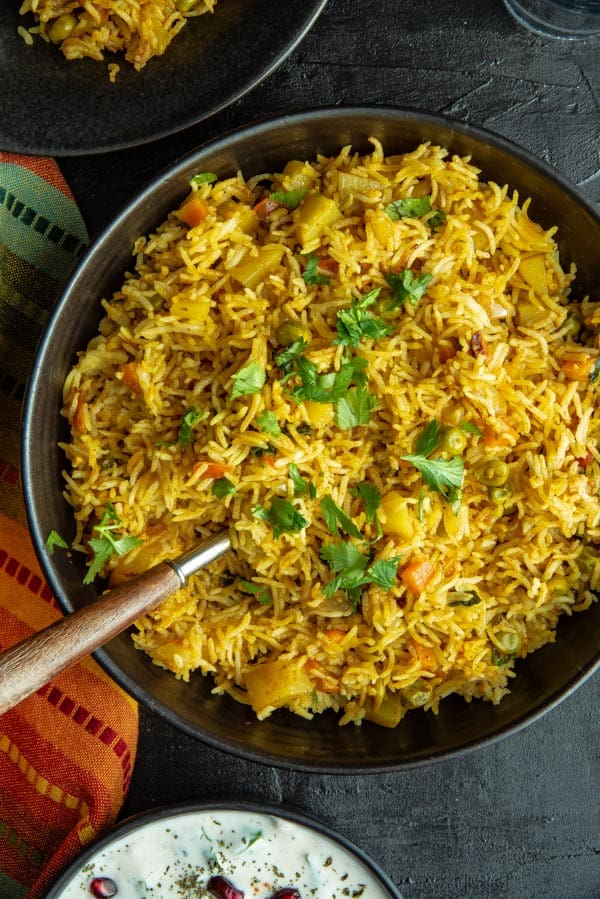

VegBiryani Rice Recipe
INGREDIENTS
Whole Garam Masala
- 2 Black Cardamom
- 1 Javetri
- 3 Bay Leafs
- 5 Black Peppercorns
- 2 Cinnamon Stick
- 5 Cloves
- Vegetables
- 8 to 10 Potato Cubes
- 1/4 cup Green Peas
- 5 cubes of Green Pepper
- 8 thick slices of Carrots
- 7 to 8 Paneer Cubes
- 4 to 5 Mushrooms cut in half
Other Ingredients
- 3 tbsp Oil
- 1 cup finely chopped Onion
- 1 cup finely chopped Tomatoes
- 1/2 cup Yogurt
- 1/4 cup chopped Coriander Leaves
- 1/2 cup chopped Mint Leaves
- 1 1/2 tsp Coriander powder
- 1 tsp Ginger Garlic paste
- 2 slit Green Chili
- 1 tsp Red Chili powder
- 1/2 tsp Garam Masala
For Boiling Rice
- 1 cup Basmati Rice
- 6 cups Water
- 3 Bay Leaves
- 2 Black Cardamom
- 2 Cinnamon Stick
- 5 Black Peppercorns
- 5 Cloves
- 1 Javetri
- 1 tbsp Salt
For Biryani Layers
- 1 tsp Biryani Masala
- 1/4 cup Fried Onions
- 1/4 cup Fried Cashew nuts
- 1/4 cup Chopped Coriander Leaves
- 8 Saffron strands dissolved in water
- 2 tbsp Desi Ghee or Butter
INSTRUCTIONS
Cooking the veggies and Masala Preparation
- Heat oil in a pan. Once oil is hot add in cumin seeds and all whole spices and allow them to sizzle up.
- The add onions and cook until it gets light golden color.
- Then add ginger garlic paste, turmeric powder, coriander powder, mix very well and cook for 2 minutes.
- Add tomatoes, chili powder, garam masala and cook for 3 to 4 mts or until tomatoes softens.
- Add in yogurt, coriander leaves, mint leaves, biryani masala and mix well.
- Add potato cubes, mix, add splash of water, cover and cook for 4 to 5 mts.
- Then add carrots, green pepper, cover and cook for 2 to 3 mts.
- Add mushrooms, paneer, again cover and cook for 2 mts.
- Add salt to taste and mix.
Boiling Rice
- Wash rice 3 to 4 times and soak in 3 cups of water for 30 mts.
- Boil 6 cups of water in a pan.
- After water comes to a boil, add in all whole spices mentioned in the list.
- Add salt and mix well.
- Then add soaked and drained rice in boiling water and boil for 7 to 8 mts or until rice is 90% done.
- After rice is done cooking, drain off all the excess water from boiled rice and keep drained rice aside.
- For Layering Biryani
- Put the layer of boiled rice over cooked vegetables and spread that out evenly.
- Then sprinkle biryani masala over boiled rice.
- Add drops of saffron water.
- Add ghee and spread all over rice.
- Add splash of water over rice.
- Then sprinkle coriander leaves, mint leaves and fried onions.
- Put the cover.
Cooking time
- First set the stove temperature on high heat and put the layered biryani pan over high heat for 30 to 40 seconds.
- Then lower down the heat to medium and cook on a medium heat for 2 mts.
- Then lower down the heat to the lowest possible setting and cook for 20 mts.
- Serving
